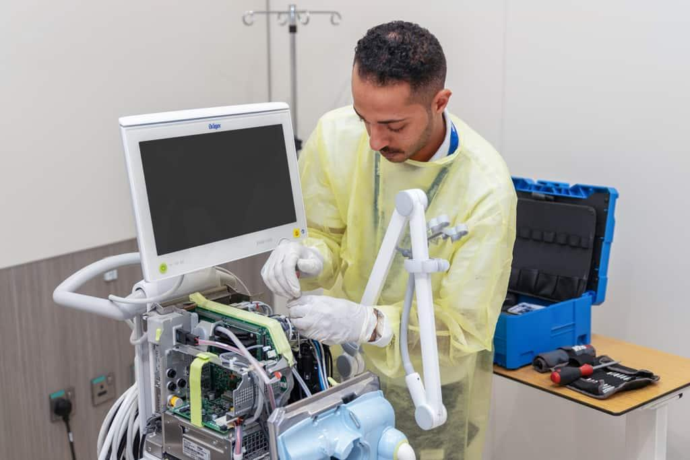

Medical Equipment Refurbishment
Why Replace It When We Can Bring It Back to Life?
Old, damaged or non-functional equipment may still have recoverable value. HMS assesses condition and explores practical repair, functional restoration and cosmetic-refurbishment options before unnecessary replacement.
Recommendations depend on technical feasibility, parts availability, condition and intended clinical use.
Talk to HMS →
Assess. Restore. Test. Return to Service.
Technical Assessment
Assess equipment condition and identify practical recovery possibilities.
Practical Repair
Identify faults and explore suitable repair and component-replacement options.
Restoration
Restore suitable body, panels, paint and equipment finish where practical.
Functional Verification
Verify restored equipment function before returning it to service.
Practical Equipment Recovery & Restoration
Technical & Functional Assessment
Assess equipment condition and determine whether recovery is practical.
Fault Identification & Repair
Identify equipment faults and explore suitable repair options.
Component Replacement
Replace suitable components where technically appropriate and available.
Body & Panel Restoration
Restore suitable equipment bodies, panels and damaged surfaces.
Paint & Finish Restoration
Improve equipment appearance through suitable paint and finish restoration.
Final Functional Verification
Verify equipment functionality before returning the equipment to service.
Assess
Evaluate equipment condition, faults and recovery possibilities.
Repair
Identify faults and carry out suitable repair work.
Restore
Restore suitable components, panels and equipment finish.
Test
Perform final functional verification of the restored equipment.
Return to Service
Return suitable equipment to service after verification.
Before replacing the equipment, let HMS assess whether recovery is practical.
Share your equipment requirement with HMS and let our team assess the technical feasibility of repair or refurbishment.
Talk to HMS →